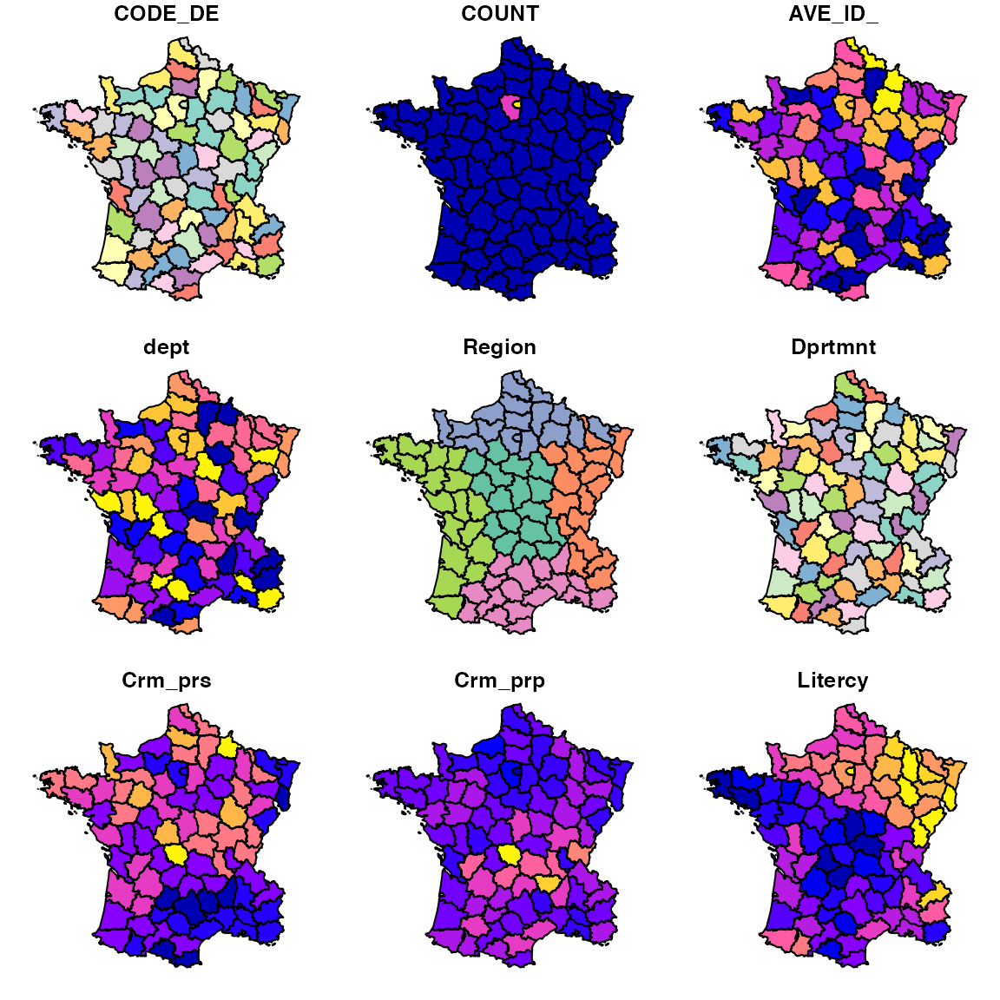
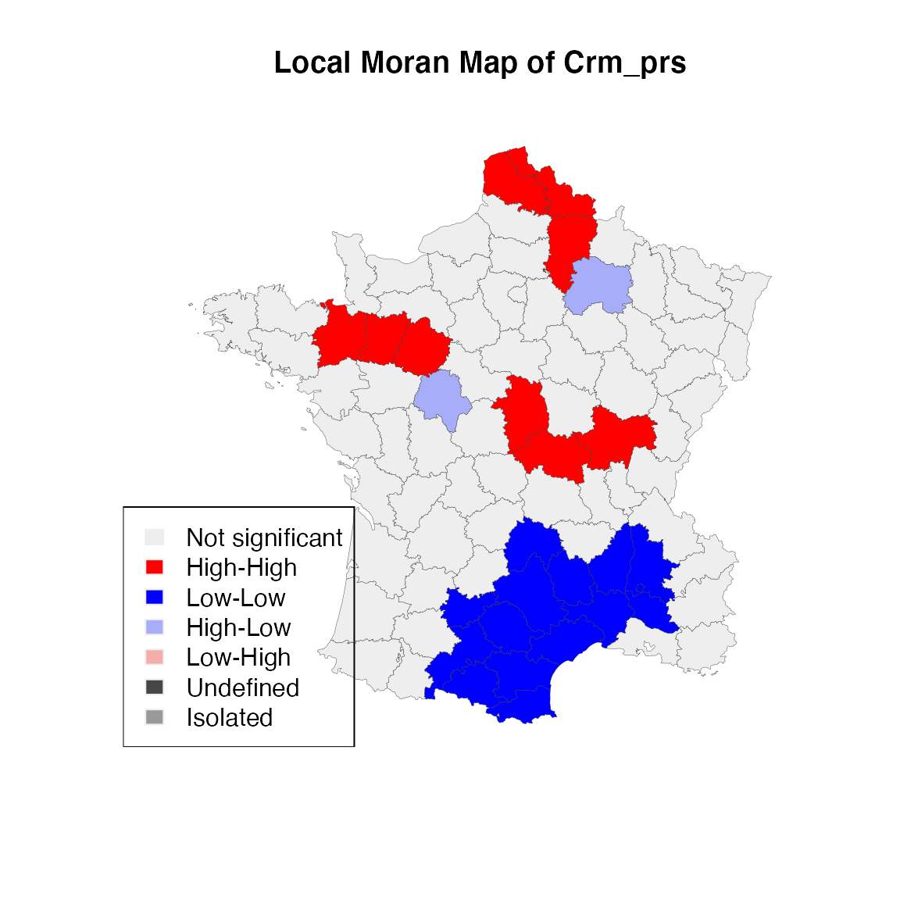
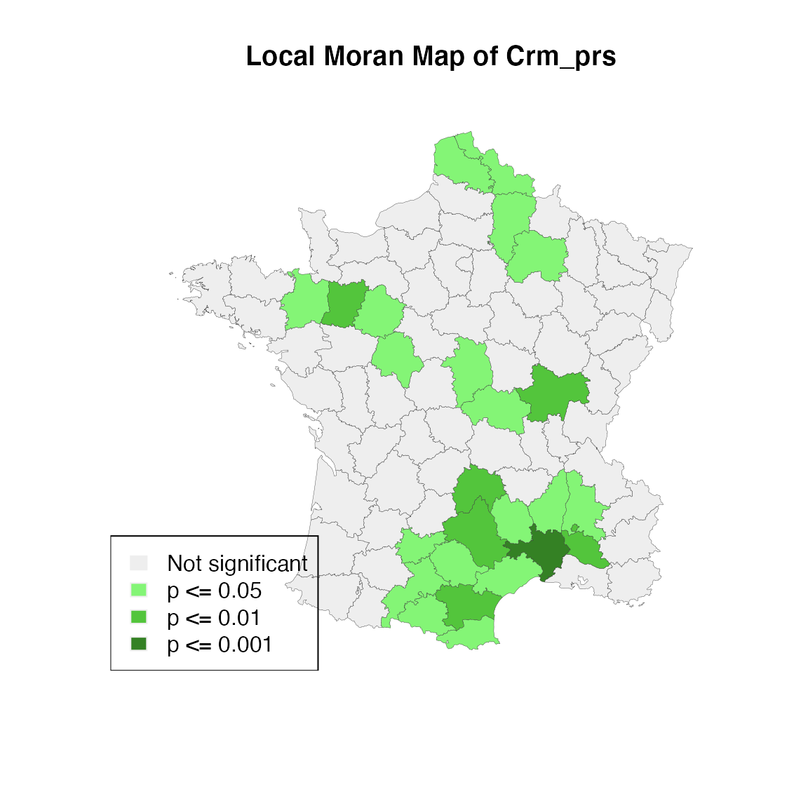

vignettes/rgeoda_esda_sf_0_0_6.Rmd
rgeoda_esda_sf_0_0_6.RmdIn this section, we will work with sf library to do exploratory spatial data analysis (ESDA).
sf packageThe sf package has been popular tool to handle geospatial data. It is a good substitue of sp package which will be deprecated soon.
For example, to load a geospatial data (e.g. a ESRI Shapefile) using sf:
## Loading required package: digest
guerry_path <- system.file("extdata", "Guerry.shp", package = "rgeoda")
library(sf)## Linking to GEOS 3.8.1, GDAL 3.1.4, PROJ 6.3.1
guerry <- st_read(guerry_path)## Reading layer `Guerry' from data source `/private/var/folders/z1/5l2c5r6d41bfkrlq6s66s2gh0000gn/T/Rtmp353PXE/temp_libpath1424866a56373/rgeoda/extdata/Guerry.shp' using driver `ESRI Shapefile'
## Simple feature collection with 85 features and 29 fields
## geometry type: MULTIPOLYGON
## dimension: XY
## bbox: xmin: 47680 ymin: 1703258 xmax: 1031401 ymax: 2677441
## projected CRS: NTF (Paris) / Lambert zone IIYou can simply call plot() function to render the first 9 chorepleth maps using the frist 9 variables in the dataset:
plot(guerry)## Warning: plotting the first 9 out of 29 attributes; use max.plot = 29 to plot
## all
Now, with the sf object guerry, you can call rgeoda’s spatial analysis functions. For example, to examine the local Moran statistics of variable “crm_prs” (Population per Crime against persons):
First, creating a queen contiguity spatial weights:
queen_w <- queen_weights(guerry)Then, applying local moran statistics:
lisa <- local_moran(queen_w, guerry['Crm_prs'])Now, with the LISA results, we can do exploratory spatial data analysis by generating a LISA cluster map:
lisa_colors <- lisa_colors(lisa)
lisa_labels <- lisa_labels(lisa)
lisa_clusters <- lisa_clusters(lisa)
plot(st_geometry(guerry),
col=sapply(lisa_clusters, function(x){return(lisa_colors[[x+1]])}),
border = "#333333", lwd=0.2)
title(main = "Local Moran Map of Crm_prs")
legend('bottomleft', legend = lisa_labels, fill = lisa_colors, border = "#eeeeee")
From the above code, you can see that we still use sf object to do plotting. The values of cluster indicators from rgeoda’s LISA object are used to make the LISA map.
You can easily append the lisa results to original sf object by manipulating the data.frame object inside the sf object.
guerry['lisa_cluster'] <- lisa_clustersIf you check the values of the cluster indicators, you will see they are integer numbers 0 (not significant), 1 (high-high cluster), 2 (low-low cluster), 3 (low-high cluster), 4 (high-low cluster), 5 (neighborless/island), 6 (undefined), which are excatly the same with GeoDa software when you save LISA results to a table:
lisa_clusters## [1] 0 1 1 0 0 2 0 2 0 2 2 0 0 2 0 0 1 0 0 0 0 0 0 2 0 0 0 2 2 0 0 2 1 0 3 0 0 0
## [39] 0 0 0 0 0 0 0 2 0 0 3 0 1 0 0 0 0 0 1 0 0 1 0 0 0 2 0 0 0 0 1 1 0 0 0 0 0 0
## [77] 2 2 0 2 0 0 0 0 0To create a siginificant map that is associated with the Local Moran map:
lisa_p <- lisa_pvalues(lisa)
p_labels <- c("Not significant", "p <= 0.05", "p <= 0.01", "p <= 0.001")
p_colors <- c("#eeeeee", "#84f576", "#53c53c", "#348124")
plot(st_geometry(guerry),
col=sapply(lisa_p, function(x){
if (x <= 0.001) return(p_colors[4])
else if (x <= 0.01) return(p_colors[3])
else if (x <= 0.05) return (p_colors[2])
else return(p_colors[1])
}),
border = "#333333", lwd=0.2)
title(main = "Local Moran Map of Crm_prs")
legend('bottomleft', legend = p_labels, fill = p_colors, border = "#eeeeee")